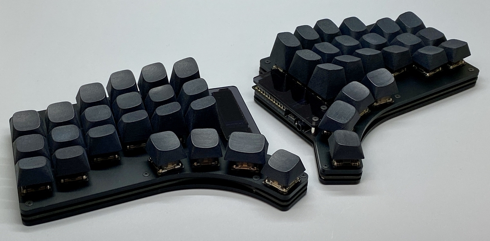
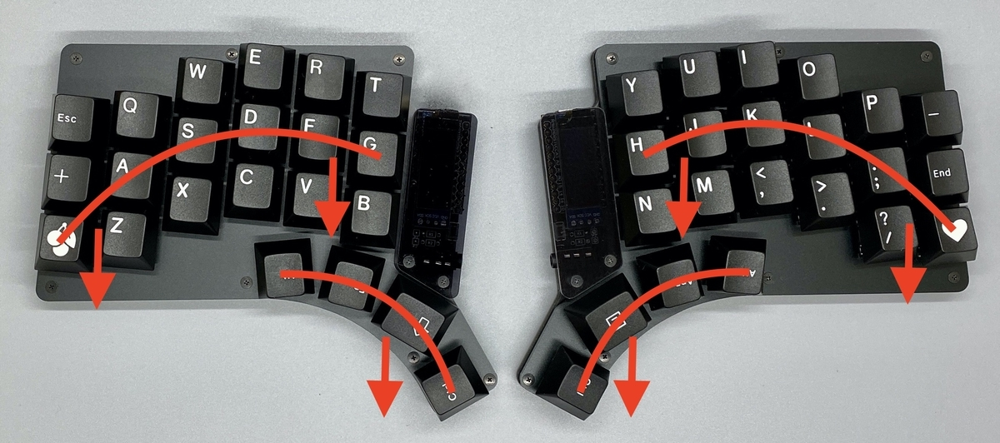
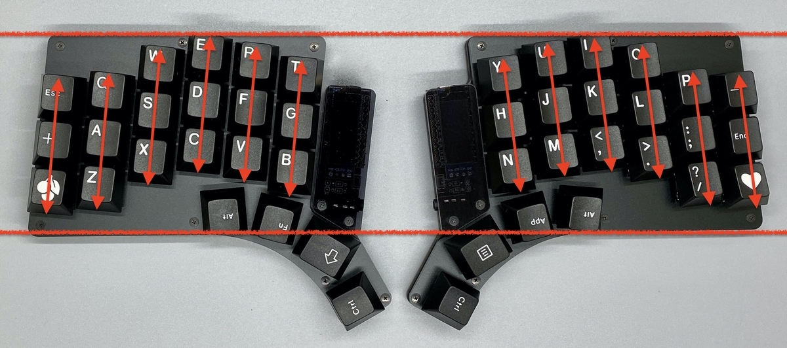
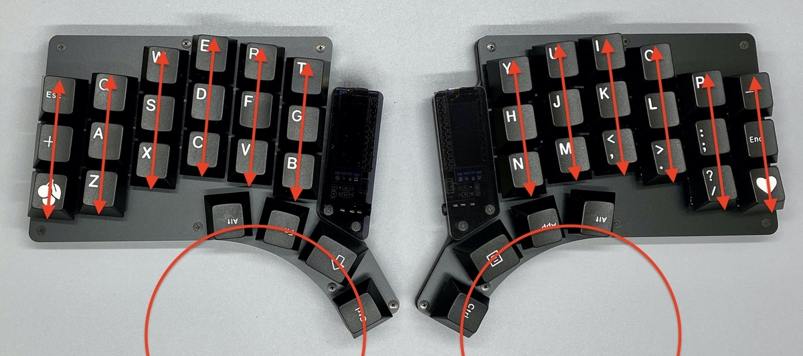
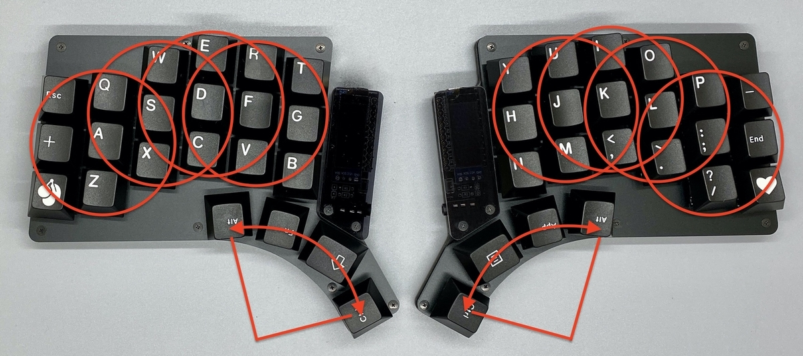
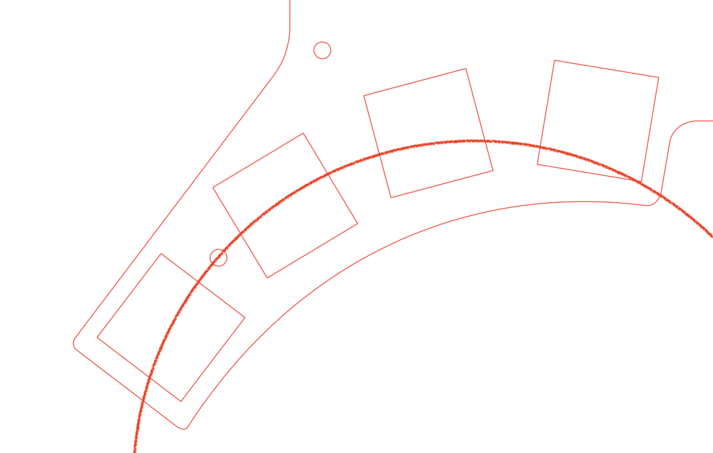
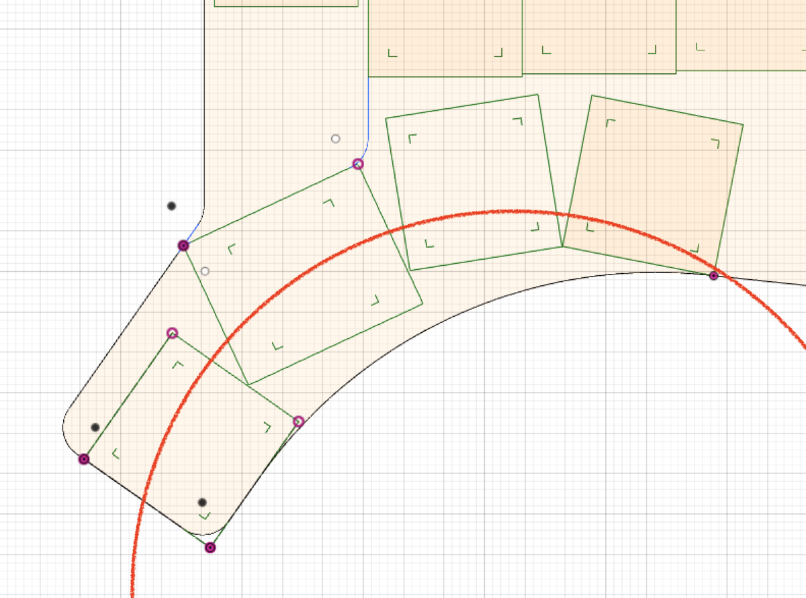
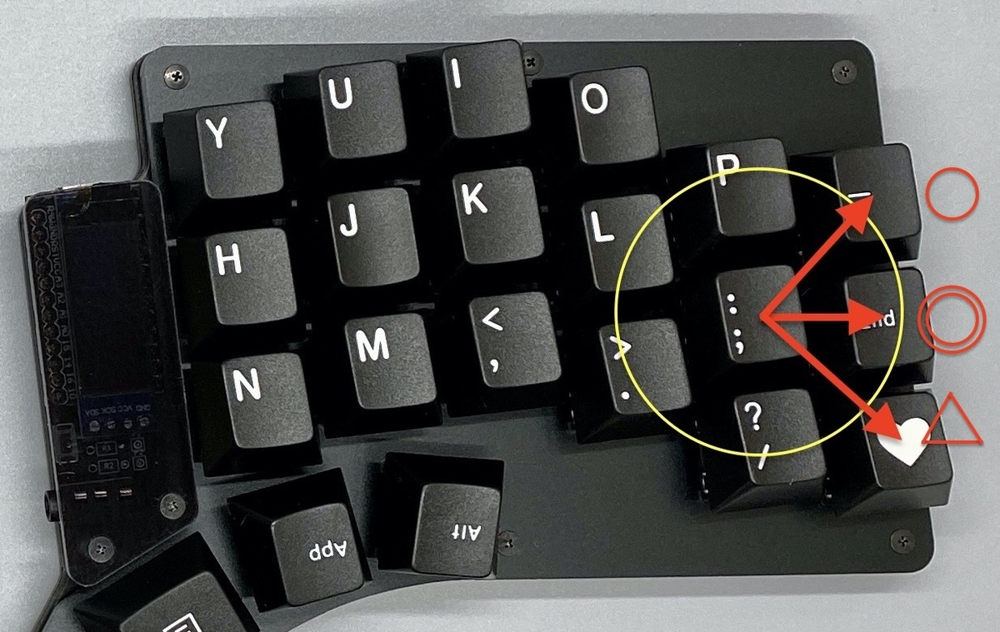
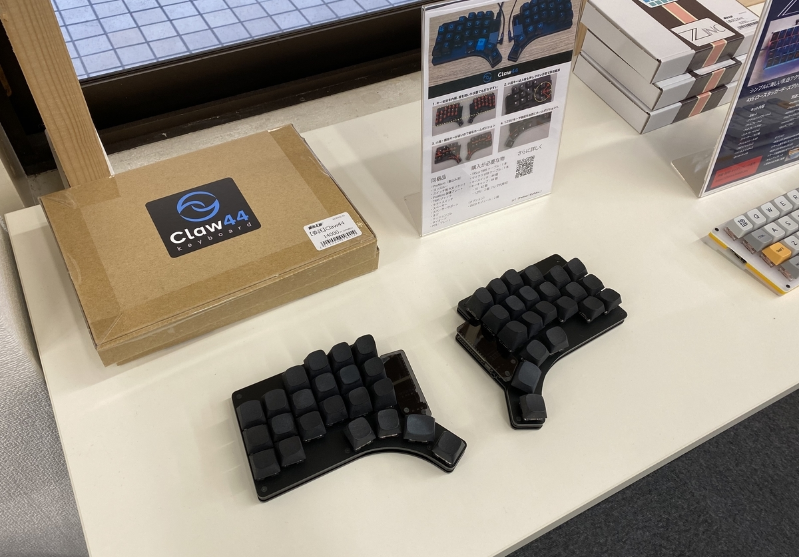

Claw44とは？

（↑キーキャップはぜろけーさんの"3D” キーキャップセット）
Claw44はyfukuにより、負担が少なく快適に使用し続けられるキーボードを目指して設計され、2019年4月に発売開始。 様々な方にご利用いただき、現在はブラッシュアップしたClaw44 v2となっています。
Claw44で実現したかったのは、次の3つです。
- 手を置いた時に自然な状態に落ち着くこと
- 指の移動をスムーズにすること
- 小指に優しく、親指をもっと活用してあげること
それぞれ詳しく説明していきます。
※自分が求める最高のキーボードを目指して作っているので、説明には主観的なことが多く含まれます。 手の特徴や感じ方、考え方は人それぞれなので、その点を差し引いて読んでいただければと思います。 また、わかりやすくなるようにゼロベースの説明をしていますが、多くの機能は自作キーボードコミュニティなどの先人たちが生み出してくれたものになります。
手を置いた時に自然な状態に落ち着く
左右分割
通常の一体型だと肩が狭くなりがちなので、左右に分割し、肩を開いて楽な状態で打鍵できるようにしました。
キー配置を手に合わせる

自作キーボードの分割タイプを使うようになって肩こりが軽減したのですが、次に気になりはじめたのが手の甲の疲れでした。
観察してみると、打鍵せずにキーボードに手を置いている時に、無駄な力が入っているのを感じました。
キーボードのキー配置と、自然に手を置いた時の位置がずれており、キーボードに手を合わせるために疲れるのではと考え、自分の手にキーボードを合わせるように、親指・小指部分をぐっと手前に引き、ズレを無くしました。
八の字、水平ライン

キーボードを使う時、肩幅くらいに開いているのですが、そこから少しだけ内側にくの字形に腕を曲げています。 その状態で、腕のラインと手のラインを真っ直ぐにするためにキー全体を少し傾斜させて、八の字になるようにしています。
この傾斜を維持できるように、キーボードの上下のラインが水平にし、そこに対して傾斜をつけました。
このラインを基準に自分ならではの角度を調整していくのがおすすめです。
指の移動をスムーズにする
キーの配置

指の移動のスムーズさを考えたときに、手を握る・開くという動作が、自然でスムーズな動作であると考えました。
これを打鍵に伴う動作に当てはめてみました。
親指は付け根を起点に、弧を描くような動きになると考えたので、弧に沿うように配置しています。
それ以外は、単純な上下の動きとなるため、ホームポジションを起点に縦の列を揃えたキー配置になっています。
キーの数

腕を動かすと大きな負担になるので、腕を動かさず、ホームポジションを崩さずに打鍵できる範囲にキー数を抑えています。
斜め方向も含めてキー1つ分くらいがポジションを崩さない限界と考えています。
親指は稼働範囲が広いので、外側は2個目までつけています。
（押しにくい場所ではあるので、利用頻度の低いキーのアサインをおすすめします）
小指に優しく、親指をもっと活用する
通常のフルキーボードだと、小指の担当範囲が広く、shiftやcontrolなどのmodifierキーを多く担当することもあり、酷使してしまうことが多いと考えています。
一転、小指よりも強いであろう親指の役割は少なくなりがちです。
親指は頑丈、かつ器用に動かすこともできるので、4キーずつ配置し、無理させがちな小指の役割を移してあげるのが良いと考えました。
親指の最適化
そんな親指をちゃんと機能させるために、いくつか工夫をしています。
自分の場合、親指キーが遠くにあると、キーキャップの淵に当たって指が痛くなることがありました。
そのため、親指キーをさらに手前に置くことによって、キーキャップの天面と指が馴染むようにしています。（親指の関節のちょっと上くらいで打鍵する感じ）
親指に少し余裕ができるため、より楽な体制で手を保持することができます。
親指のホームポジションをわかりやすく
親指キーを弧を描くように均等に置くと、各キー毎の変化が少なく、どのキーを押しているか見失うことがあり、親指で4キーを使う妨げになります。
（均等に配置した初期バージョン） 
親指のホームポジションのキーを1.25Uと大きめのサイズにする事で、自然に親指がホームポジションに向かうようにしました。 ホームポジションの左右のキーは親指の触れる位置を上下に動かして、目視しなくてもどのキーかを見分ける手助けをしています。 また、もっとも多用するホームポジションキーが大きくなることで、とても打ちやすくなります。

小指の最適化

八の字に傾斜をつけると小指のキーの位置が上がってしまい打ちにくなります。 全体のバランスを調整しつつ、特に小指が自然な位置に来るように大幅に下げています。
小指は下段に動かしづらいので、1番外側の列は上中段を押しやすいようにしています。 小指ホームポジションの真横に中段のキーを置き最短距離で押せるように、上段は内側に傾いているため下段よりも近い位置に配置されています。
下段は遠くなるので打ちにくくなりますが、元々打ちづらいキーなので使用頻度の低いキーのアサインをおすすめします。 その分、親指キーは多いのでmodiferキーの受け皿として活躍します。
組み立て
Claw44はご自身で半田付けなどをして組み上げる自作キットになります。 ご購入の際にはビルドガイド をよく読み、必要な道具や作業を把握してください。
作りやすさ
v2になり、さらに組み立てやすくなりました。
- 左右独立基板になったため、部品を逆につけるなどミスが発生しにくい
- ProMicroはコンスルー付きなので取り外し可能
- キースイッチはソケット対応なので取り外し可能
- 部品同士が重ならないシンプルなつくり
- ダイオードはスルーホール用が同梱されてますが、表面実装タイプも使用可能
入手方法
通販
pixivさんの運営しているBOOTHで出店しています。
Claw44 v2 ProMicroセット - yfuku - BOOTH
店舗
遊舎工房さんで委託販売しています。
気軽に触れるようになっているので、ぜひ足を運んでみてください！

Web上の情報
紹介記事
- 自作キーボード Claw44 を組み立てました｜miyaoka｜note
- 【自キ】普段使っているキーボードを紹介します 【Claw44】 - Sansan Builders Box
- 電子工作 5作目・Claw44 - すぎゃーんメモ
- 自作キーボードへの第一歩。 #Claw44 を組み上げる。 | 徒労日記
- 40％キーボード claw44 使い始めました｜エンジニアストーリー
- Claw44で自作キーボードデビューした - jiska
- Claw44作成ログ（自作キーボード） - やったこと
- Tavi’s Travelog - 自作キーボードを買ってみた - Claw44 ビルドログ01
動画
- 自作キーボード Claw44を見にいってきた in 遊舎工房 - YouTube
- 【自作キーボード】Claw44 v2 beta + Purple Zealios V2 + Tribosys3204【ルブ前後比較】 - YouTube